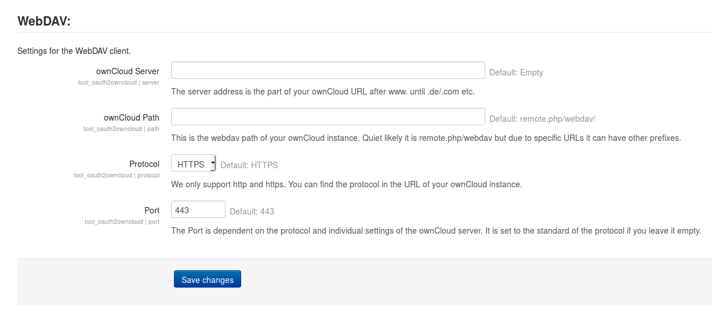
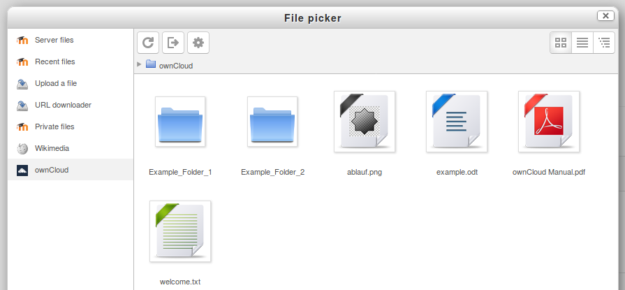

Benutzung
Plugins können in Moodle zusätzlich zum core installiert werden. Im folgenden wird beschrieben, wie sie unsere Plugins herunterladen können und anschließend in den einzelnen Plugins die richtigen Einstellungen tätigen können. Zusätzlich werden Ihnen verschiedene Ansichten des Plugins präsentiert um die Funktionalitäten der jeweiligen Plugins zu verdeutlichen.
Download
Unsere Plugins sind zurzeit in einem öffentlichen Github repository verfügbar. Von dort aus können sie Plugins auf zwei Wegen herunterladen.
-
Als Zip-Datei
Klicken sie am rechten Rand in dem Menü
clone or downloadauf Download ZIP. In Moodle können ZIP-Ordner einfach installiert werden, indem sie vom Seiten-Administrator unter dem MenüpunktWebsite-Administration Plugins Plugin installierenhochgeladen werden. Das Plugin wird automatisch richtig platziert. -
Mit dem Befehl git clone
Gehen sie in ihrer Moodle Instanz in den zugehörigen Ordner. Falls sie unsicher sind, lesen sie in den Beschreibungen der einzelnen Plugins nach, welcher der richtige Ordner ist. Führen sie folgenden Befehl aus:
git clone git@github.com:pssl16/name_of_the_repository.github.git
Nun befindet sich der Inhalt an der richtigen Stelle, der Ordner muss nun noch umbenannt werden. Das letzte Wort des Ordners ist der Name des Plugins und muss auch der Name des Ordners sein.
Der Vorteil des zweiten Weges ist, dass Sie mittels git pull Änderung schnell nach pflegen können. Wenn Sie sich mit git nicht auskennen sollten sie jedoch den ersten Weg wählen.
Wenn sie die Plugins heruntergeladen und richtig platziert haben, werden dem Administrator der Moodle-Website im Plugin Manager die neuen verfügbaren Updates angezeigt.
Um unsere Plugins zu benutzen benötigen sie in jedem Fall das oauth2owncloud_admin_tool, alle anderen Plugins lassen sich nicht ohne dieses installieren. Beachten sie dies bei der Reihenfolge der Installation wenn sie die Plugins als ZIP-Ordner installieren.
Admin Tool oauth2sciebo
Admin Einstellungen
Damit das OAuth 2 Protokoll reibungslos ablaufen kann, muss zuerst der Client in den Einstellungen registriert werden.
Hierfür muss der Administrator das Formular des Plugins, das unter Website-Administration>Plugins>Authentifizierung>Sciebo OAuth 2.0 Configuration zu finden ist, ausfüllen.
Als erstes Feld muss die Client ID eingegeben werden. Diese findet man in ownCloud, sobald ein neuer Client registriert wurde. Dasselbe gilt für das nächste Feld, hier wird das Secret angegeben, dass sich auch aus der ownCloud App kopieren lässt.

Nun werden die Einstellungen für den WebDAV Zugriff festgelegt.
Als erstes wird die Adresse des ownCloud Servers angegeben.
Im nächsten Feld wird der Pfad zur WebDAV Schnittstelle angegeben in ownCloud endet diese typischerweise mit remote.php/webdav/.
Als Protokolltyp kann http oder https angegeben werden. Wenn keine Angabe gemacht wird, wird von https ausgegangen.
Als letztes kann der Port angegeben werden.
Repository sciebo
Admin Einstellungen
Sobald das Admin tool installiert wurde, kann das Repository installiert werden. Bitte beachten Sie, dass die oben genannten Einträge getätigt wurden, ansonsten funktioniert die Authentifizierung des Repositorys nicht. Repositorys Plugins müssen in Moodle von einem Administrator unter dem Menüpunkt Website-Administration>PluginsRepositories>Übersicht aktiviert werden. Der Administrator kann dem Repository zusätzlich unter Einstellungen einen globalen Namen geben.
Nutzer Sicht
Das Repository ist sowohl in den Kursen als auch für private Instanzen verfügbar und muss nicht mehr hinzugefügt werden. Kurs Administratoren können das Repository jedoch unter Speicherorte löschen. Die Nutzung lässt sich nicht auf bestimmte Nutzer oder Aktivitäten im Kurs einschränken. Im File Picker muss man sich zunächst anmelden.
Danach sieht man nach der Anmeldung eine tabellarische Auflistung der vorhandenen Dateien:

Im roten Kasten sehen sie Buttons um den Inhalt neu zu laden, sich auszuloggen und nur als Admin sieht man den letzten Button in dem man die Einstellungen des OAuth2 admin_tool bearbeiten kann.
collaborative_folders
Einstellungen
Admin Einstellungen
Für die Aktivität collaborative_folders wird ein technischer Nutzer der ownCloud Instanz benötigt. Bei diesem Nutzer werden alle Ordner die erstellt werden gespeichert. Um den Nutzer festzulegen muss in Website-Administration>Plugins>Aktivitäten>collaborativefolders ein technischer Nutzer mit Hilfe des OAuth2 Protokolls authentifizieren. Über einen Login Button werden Sie aufgefordert sich in ownCloud zu authentifizieren. Falls Sie nicht richtig weitergeleitet werden, sind die Einstellungen im Admin tool oauth2sciebo fehlerhaft, bitte überprüfen Sie diese. Achten Sie darauf, dass Sie sich nicht mit Ihrem normalen Account sondern mit dem technischen Nutzer anmelden.
Sicht des Lehrenden
Die Aktivität ist in jedem Moodle Kurs verfügbar. Wenn ein Lehrender die Aktivität dem Kurs hinzufügt muss er dem Ordner einen Namen für die Moodle Instanz und einen für die ownCloud Instanz geben. Danach kann festlegt werden ob Lehrende des Kurses Zugriff auf alle erstellten Ordner haben. Eins der wichtigsten Integrationsszenarien ist, dass nur für Gruppen von Studierenden ein Ordner erstellt wird. Dies ist möglich, wenn der Lehrende den Zugriff auf bestimmte Gruppen beschränkt. In diesem Fall werden nur für die gewählten Gruppen einzelne Ordner erstellt.
Sicht der Studierenden
Wenn ein Ordner für einen Studierenden freigegeben wurde, sieht dieser die Aktivität in dem Kurs. Wählt er diese aus, kann er sich den Ordner herunterladen, oder sich den Ordner in seine Instanz duplizieren. Hat der Studierende keinen Account in der ownCloud Instanz kann er den Ordner herunterladen jedoch nichts in den Ordner laden.